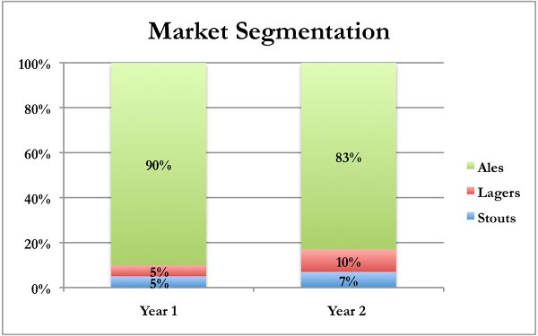
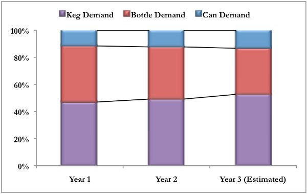

Your bank has approached you to discuss short-term financing options to help your brewery grow. Now that you have one year of successful production and sales, you have proved to the bank that you operate a sustainable business. The bank has offered you an asset-based line of credit to help with short-term financing needs. With positive sales, you now have assets such as Accounts Receivable, Finished Goods Inventory, and Equipment. The bank will use these assets as collateral for your line of credit, if you decide to use it. Like many lines of credit, the bank uses the discounted value of these assets from your latest financial statements to set the limit you may borrow under the line of credit. The bank discounts their book value to protect itself in the case that it must sell off these assets to pay back its loan if your business fails. Because this financing is considered short-term and is collateralized by specific assets, the interest rates are relatively low. If you borrow less than 50% of the maximum amount, the annual interest rate is 3.50%; if you borrow more, the rate is 6.50%. The bank has told you that it will keep this line of credit open for your business for the next five years at these rates. You need to decide if you are going to use this financing option this year and, if so, how much you will borrow.
As part of your annual production planning process, you need to look at how your brewery’s performance last year fared relative your expectations. If there were wide variances between your forecast and your actual results, were they related to a particular category, packaging type, or something else? To better hone the accuracy of your forecast this year, you decide to focus on two things: your estimated market share versus your competition and changes in market segmentation. With respect to the market share you captured in your first year of operations, being a new competitor in the market had as many benefits as it did challenges. From a competitive standpoint, other brewers had not anticipated your entrance into the market and had no defensive tactics prepared to market their products against yours. From a consumer’s standpoint, it is always exciting to try something new. However, the future will be much more challenging: competitors, many of whom are larger and have more resources, are ready to compete against you directly and the novelty of your products for consumers is probably starting to wane. Because of these factors, it will be more challenging to capture additional market share in the coming years. However, if you accurately forecast production and your packaging decisions effectively match consumer preference, it might be possible to increase your market share by 30 – 50% over last year since you are a small, fast-growing brewery.
You recently purchased a new research report, which gave you some good information about consumer trends over the last two years. The following chart shows that lagers and stouts accounted for 17% of consumer demand last year, which was a 70% increase over the previous year. The report gave a number of potential reasons for the significant decrease in ale consumption, including a growing change in consumer preferences, a series of bad weather that ruined the crops for ale ingredients, and a significant merger between the two largest ale manufacturers that may have led to an interruption in supply. It is unclear how these factors might influence next year’s demand, or which factor accounted for the bulk of the change. This report also highlighted the fact that the citizens of Megapolis are starting to consume more beer and drinking less wine. This has led to an increase in annual per capita consumption of beer from 80 liters to 82 liters. With a population of 400,000, this would lead to total forecasted demand for beer of around 32.8 million liters in the coming year.

You have begun to notice certain changes around Megapolis, including the construction of many new houses and increased traffic around the parts of town where the technology companies are located. This is usually a sign that developers are expecting an influx of new residents. As people come to tour the area, they often stop at restaurants and bars for a break. You believe that this might lead to increased consumption of kegs to meet the growing consumer demand. Based on your internal forecasting, you feel the following chart might be a good representation of consumer packaging preference for the coming year. However, there may be slight differences between ales and lagers. Based on this data, you need to decide how you will divide your beer output between kegs, bottles, and/or cans.

As your brewery expends its operations and production volume grows, it is time to start thinking about what kind of staff you will need. In general, the types of roles necessary to operate a small brewery can be divided into three categories: executive management, sales and marketing, and brewing staff.
The only potential addition to the executive management team would be a Chief Financial Officer (CFO). The responsibilities of the Chief Financial Officer include: developing the annual financial plan, providing internal and external financial reporting, preparing and filing tax reports, general office accounting, and providing the Chief Executive Officer with general advice about the financial health of the business. Typically, a CFO is hired when a brewery’s operations grow to a point where it is too difficult for the Chief Executive Officer to operate both the strategic and financial sides of the business. This usually occurs when annual sales of a brewery reach somewhere between $1,000,000 – $1,500,000.
The sales and marketing staff will consist of a Head of Marketing, a Customer Service Manager, and sales representatives. Similar to the CFO position, a Head of Marketing and Customer Service Manager are typically hired once the business grows to a certain size. To maintain positive sales growth, marketing activities need to be conducted effectively and intelligently. Both of these positions report to the Chief Executive Officer. Often, increased sales lead to a larger customer base, which requires more direct interaction and attention from the company. The Head of Marketing is usually hired around the same time as a CFO, while a Customer Service Manager is hired once annual sales reach $3,500,000 - $5,000,000. Sales representatives are needed to build and maintain good relationships with your customers. The sales force will increase as the brewery grows. Most experienced sales representatives can handle client relationships with a total annual purchasing power to lead to $2,500,000 - $4,000,000 in revenues for the brewery.
The brewing staff is the largest portion of your workforce and includes seven types of positions: brewing managers, assistant brewing managers, a Quality Control Specialist, beer brewers, beer packagers, truck drivers for beer distribution, and a cleaning staff. As opposed to the other parts of the staff, these positions largely depend on the quantity of beer produced annually. For the beer brewers, packagers, drivers, and cleaners, an easy way to approximate hiring needs is to look at how many cycles of beer you plan to produce. These are collectively called the general laborers. The number of managers and assistant managers will depend on how many general laborers you have. It is important to note that managers often have all the skills necessary to be a brewer, packager, or cleaner and can assist in these roles when needed if production volume is not high enough to warrant hiring someone for one of these specific positions.
On average, brewers and packagers work a maximum of 1,000 hours per year. In order to estimate the number of brewers and packagers needed, you must look at the brewing process flow chart to figure out how much labor is necessary to brew one batch of beer. The second step is to convert the number of days into hours, assuming that each day equates to eight hours of work. Recall that your managers will have likely been trained as brewers and at lower production volumes can handle the brewing process themselves. However, packaging is a necessary step that requires someone to perform the function whether you brew one batch or a hundred. The necessity for drivers is related to the annual distribution capacity of a truck. On average, a truck can handle 30 deliveries per month and is able to transport 5,000 liters of packaged beer per trip. You need at least one driver for each truck. Cleaners are responsible for sanitizing the brewing equipment after each cycle, though the brewers themselves can sometimes complete this function. Once annual cycles reach 25-30, it is probably time to hire a separate cleaner.
The number of managers and assistant managers will depend on how many brewers, packagers, drivers, and cleaners you decide to hire. One manager is often capable of overseeing 4 - 7 employees. One assistant manager is often needed once the number of general laborers reaches 9 – 12 so that they can help the manager with the administrative workload. A Quality Control Specialist does not manage any people, but is responsible for ensuring that the brewing process meets industry standards, uses quality ingredients, and that each batch is consistent in terms of taste. Once the production level reaches a point where a brewer needs to be hired, it is probably prudent to hire a Quality Control Specialist. Each year after you’ve completed your production forecast, you need to decide how many people to hire across these 11 positions.
Similar to the previous year, Marketing, Product Development, Promotional Activities, and Community Development are all discretionary expenses for your business. You should consider a few factors that may impact your business in the coming year before deciding how much to spend in these categories. First, you will likely face increased competition from other breweries. Second, if there are more people eating out at restaurants and bars, there is an increased opportunity to raise awareness about your product. Third, depending on how well your brewery performed last year, consumers may be content with your beer quality, though improvements are always welcomed. Finally, community development will never cease to be important; to the extent that other categories are changed, any cash savings could be redeployed to serving Megapolis.